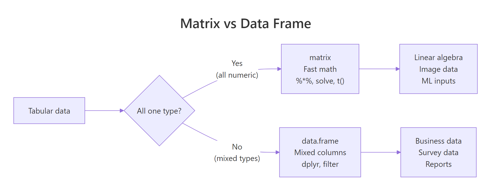

R Matrices: Fast Linear Algebra Operations That Data Frames Can't Do
A matrix in R is a 2D container where every element has the same type, usually numeric. Unlike a data frame, a matrix lets you do real linear algebra: %*% for matrix multiplication, t() for transpose, solve() for inverses. If you're doing math instead of wrangling columns, you want a matrix.
What is a matrix in R and how is it different from a data frame?
A matrix is a vector with a dim attribute that tells R "pretend this is rows and columns." Every element must be the same type, all numeric, all character, all logical. Mixing types is a data frame's job; uniform numeric arithmetic is a matrix's job.
Three rows, four columns, filled column by column (that's R's default, more on that in a moment). The dim attribute is what turns a plain vector into a matrix; strip the dim and you're back to a 12-element vector.

Figure 1: Use a matrix when every cell is the same type and you want linear algebra. Use a data frame when columns have different types.
The trade-off is simple: matrices are faster and enable math operators; data frames are flexible and play well with dplyr. Use whichever fits the job.
How do you create a matrix from vectors?
Three common ways: matrix(), cbind() (bind columns), and rbind() (bind rows). Each has its moment.
R fills columns first by default, a surprise if you're coming from Python's row-major NumPy. byrow = TRUE switches to the more intuitive left-to-right fill.
cbind and rbind are best when you already have vectors and want to assemble them. matrix() is best when you have flat data and know the target shape.
rownames(m) and colnames(m), or pass dimnames = list(rnames, cnames) to matrix().Try it: Create a 2x3 matrix ex_m from c(10, 20, 30, 40, 50, 60), row-major. Give it rownames "r1", "r2" and colnames "a", "b", "c".
Click to reveal solution
byrow = TRUE fills the values left-to-right, top-to-bottom, so 10, 20, 30 become the first row exactly as you read them. Without it, R would default to column-major order and put 10, 20 in column 1 instead, which is rarely what you want when transcribing tabular data by hand. Assigning to rownames() and colnames() after construction is equivalent to passing dimnames = list(c("r1","r2"), c("a","b","c")) to matrix(), use whichever reads more clearly in your code.
How do you index a matrix by row, column, or both?
Matrix indexing uses [row, col]. Leave either blank to mean "all of them." The result is another matrix, unless you ask for a single row or column, in which case R drops it to a vector (you can prevent that with drop = FALSE).
That third call, m[, 2], returned a plain vector, not a column matrix. If you're writing code that expects a matrix back, add drop = FALSE:
Now you get a 4x1 matrix, preserving the 2D shape. This matters inside functions where downstream code assumes a matrix-typed argument.
You can also subset with logical vectors and negative indices, just like regular vectors:
Try it: From ex_m2 <- matrix(1:20, nrow = 4), extract the 2x2 block at rows 3-4, columns 4-5.
Click to reveal solution
ex_m2[3:4, 4:5] reads as "rows 3 and 4, columns 4 and 5", R's two-argument bracket syntax is position-based and sequences work naturally on both sides. The result is still a matrix (2×2) because you asked for more than one row and more than one column; R only auto-drops to a vector when one dimension collapses to length 1. If you'd written ex_m2[3, 4:5] you'd get a length-2 vector back; add drop = FALSE to keep it as a 1×2 matrix.
Why is matrix multiplication written with %% instead of ?
Because * does elementwise multiplication, not matrix multiplication. If you want the mathematical matrix product, row-dot-column, you need %*%. Mixing them up is one of the most common R bugs in linear algebra code.
Two different results, two different operations. The * operation requires the matrices to have the same shape; %*% requires the inner dimensions to match (if A is $m \times k$ and B is $k \times n$, the product is $m \times n$).
%*% says "non-conformable arguments," your inner dimensions don't match. Transpose one side with t() or rearrange the operands.Other core linear algebra functions:
solve(A) gives the inverse; solve(A, b) solves the linear system $Ax = b$ without forming the inverse explicitly (faster and more numerically stable).
Try it: Solve $Ax = b$ for $A = \begin{pmatrix}3 & 1\\1 & 2\end{pmatrix}$ and $b = \begin{pmatrix}9\\8\end{pmatrix}$ using solve(A, b).
Click to reveal solution
solve(A, b) returns the vector x that satisfies A %*% x == b, here that's c(2, 3). Verifying with A %*% ex_x recovers the original b, which is always worth doing when you're double-checking a linear-algebra result. Note that solve(A, b) is both faster and more numerically stable than computing solve(A) %*% b, skip the explicit inverse whenever you can, especially for larger systems where round-off error accumulates.
When should you reach for a matrix instead of a data frame?
Three situations where matrices are the clear choice:
1. All-numeric tabular data used for math. If you're computing correlations, covariances, PCA, or doing anything with %*%, use a matrix. Most statistical and ML functions in R convert data frames to matrices internally anyway, you save that cost by starting with one.
2. Image and grid data. A grayscale image is naturally a matrix, image(m) draws it. A heatmap is a matrix. An adjacency matrix in graph code is, obviously, a matrix.
3. Memory-sensitive work on large homogeneous data. A numeric matrix stores values contiguously in memory; a data frame stores each column separately with per-column overhead. For a million-row all-numeric table, the matrix version uses less memory and runs faster.
as.matrix(df) a lot, the data was probably a matrix to begin with. Starting with the right data structure saves conversions downstream.Practice Exercises
Exercise 1: Build and inspect
Create a 4x3 matrix M filled row-major with values 1-12. Print its dimensions, row sums, and column means.
Show solution
rowSums, colSums, rowMeans, and colMeans are vectorised and fast, use them instead of looping.
Exercise 2: Scale a matrix
Standardize each column of M to have mean 0 and sd 1 using base scale(). Verify the result.
Show solution
scale() centers (subtracts mean) and scales (divides by sd) each column. It's the standard preprocessing step before PCA or k-means.
Exercise 3: Solve a linear system
For $A = \begin{pmatrix}2 & 1 & 0\\1 & 3 & 1\\0 & 1 & 2\end{pmatrix}$ and $b = (5, 10, 7)$, find x such that A %*% x = b.
Show solution
Summary
| Task | Use |
|---|---|
| Mixed-type tabular data | data.frame |
| All-numeric table for math | matrix |
| Elementwise multiply | A * B |
| Matrix multiply | A %*% B |
| Transpose | t(A) |
| Inverse | solve(A) |
Solve Ax = b |
solve(A, b) |
| Row/column stats | rowSums(), colMeans(), apply() |
| Convert a data frame | as.matrix(df) |
Rules of thumb:
- Matrices are for math. If you need
%*%, transpose, or inverse, don't fight with a data frame. - Watch column vs row fill order. Default is column-major, use
byrow = TRUEwhen reading row by row feels more natural. drop = FALSEwhen you need to guarantee the result stays 2D.
References
- Wickham, H. Advanced R, 2nd ed., Vectors and attributes (matrices).
- R Core Team. An Introduction to R, Arrays and matrices.
- R Documentation:
?matrix,?solve,?%*%,?apply. Run in any R session.
Continue Learning
- R Data Frames, the other 2D container, for mixed types.
- R Vectors, matrices are vectors with a
dimattribute. - Write Better R Functions, write functions that accept both matrices and data frames gracefully.